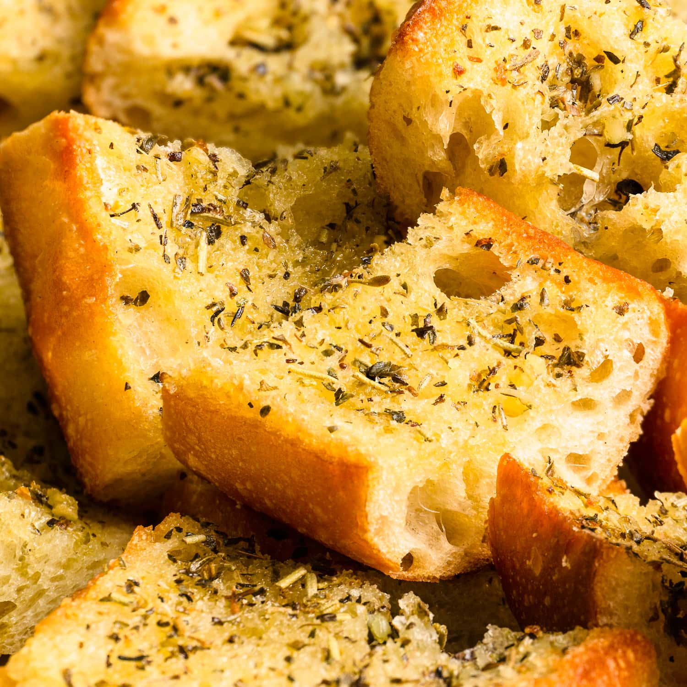

Garlic Bread Recipe

Description
This recipe will provide a basic garlic bread option. Although it is basic, it packs a punch with its delicious flavor and low prep time
Ingredients
- 1 loaf French Bread
- 4 Whole Garlic Heads
- 1 Stick of butter
- Olive Oil
- Basil
- Oregano
- Parmesian Cheese
- Salt
Steps
- Preheat oven to 400 Fahrenheit
- Place all garlic heads on aluminum foil, drizzle olive oil lightly and wrap up the garlic tightly
- Once the oven is ready,add the garlic in the oven and let it roast for one hour
- Remove the garlic from the oven and allow time to cool off
- In a bowl, mush the garlic adding the butter,basil, Oregano, and Parmesian cheese and heavily mix
- Cut the loaf of bread in two, spread the paste and distribute evenly thoughout the bread
- Add the bread back in the oven for another 12 minutes,allow to cool off after removing from oven
Return back to recipe directory